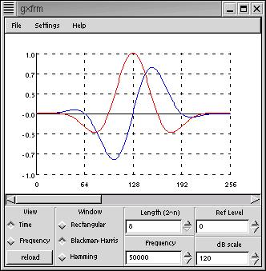

gxfrm
What is it?
This is a tool that I use in my work designing DSP chips. It helps me view
simulation data in time and frequency, with provisions for scrolling through
long tabular text or .wav files and rapidly switching between different viewing
modes.
Screenshot
This is what gxfrm looks like

Downloading
Get it here: gxfrm-0.05.tar.gz
Return to Linux page.
Last Updated
:2002-12-10
Comments to:
Eric Brombaugh